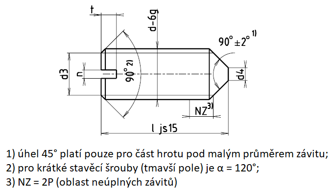

Příklad označení stavěcího šroubu se závitem M5, délky l=20 mm, pevnostní třídy 14H:
STAVĚCÍ ŠROUB ISO 7434 – M5×20 – 14H
| Závit d | M1,2 | M1,6 | M2 | M2,5 | M3 | (M3,5) | M4 | M5 | M6 | M8 | M10 | M12 |
|---|---|---|---|---|---|---|---|---|---|---|---|---|
| d3 | = malému průměru závitu d3 | |||||||||||
| d4 max. | 0,12 | 0,16 | 0,2 | 0,25 | 0,3 | 0,35 | 0,4 | 0,5 | 1,5 | 2,0 | 2,5 | 3,0 |
| n | 0,2 | 0,25 | 0,25 | 0,4 | 0,4 | 0,5 | 0,6 | 0,8 | 1 | 1,2 | 1,6 | 2 |
| nmin. | 0,26 | 0,31 | 0,31 | 0,46 | 0,46 | 0,56 | 0,66 | 0,86 | 1,06 | 1,26 | 1,66 | 2,06 |
| nmax. | 0,4 | 0,45 | 0,45 | 0,6 | 0,6 | 0,7 | 0,8 | 1 | 1,2 | 1,51 | 1,91 | 2,31 |
| tmin. | 0,4 | 0,56 | 0,64 | 0,72 | 0,8 | 0,96 | 1,12 | 1,28 | 1,6 | 2,0 | 2,4 | 2,8 |
| tmax. | 0,52 | 0,74 | 0,84 | 0,95 | 1,05 | 1,21 | 1,42 | 1,63 | 2,0 | 2,5 | 3,0 | 3,6 |
| Závit d | M1,2 | M1,6 | M2 | M2,5 | M3 | (M3,5) | M4 | M5 | M6 | M8 | M10 | M12 |
|---|---|---|---|---|---|---|---|---|---|---|---|---|
| Délka l | Přibližná hmotnost 1000 šroubů [g] | Přibližná hmotnost jednoho šroubu [g] | ||||||||||
| 2 | 9 | 17 | 2,5 | 13 | 23 | |||||||
| 3 | 16 | 29 | 42 | 60 | ||||||||
| 4 | 23 | 41 | 60 | 90 | 127 | |||||||
| 5 | 29 | 53 | 179 | 120 | 171 | 217 | 266 | |||||
| 6 | 36 | 64 | 198 | 150 | 215 | 277 | 343 | 266 | ||||
| 8 | 87 | 135 | 210 | 303 | 396 | 498 | 0,75 | 1,06 | ||||
| 10 | 167 | 271 | 391 | 515 | 653 | 0,99 | 1,41 | 2,30 | ||||
| 12 | 331 | 480 | 635 | 808 | 1,24 | 1,76 | 2,94 | 4,28 | ||||
| 14 | 568 | 754 | 963 | 1,49 | 2,11 | 3,57 | 5,28 | 7,20 | ||||
| 16 | 656 | 876 | 1120 | 1,74 | 2,47 | 4,21 | 6,29 | 8,65 | ||||
| 20 | 1115 | 1430 | 2,23 | 3,17 | 5,49 | 8,30 | 11,56 | |||||
| 25 | 2,85 | 4,06 | 7,08 | 10,81 | 15,20 | |||||||
| 30 | 4,94 | 8,67 | 13,32 | 18,84 | ||||||||
| 35 | 10,26 | 15,83 | 22,48 | |||||||||
| 40 | 11,86 | 18,34 | 26,11 | |||||||||
| 45 | 20,85 | 29,75 | ||||||||||
| 50 | 22,60 | 32,01 | ||||||||||
| 55 | 35,65 | |||||||||||
| 60 | 39,29 | |||||||||||